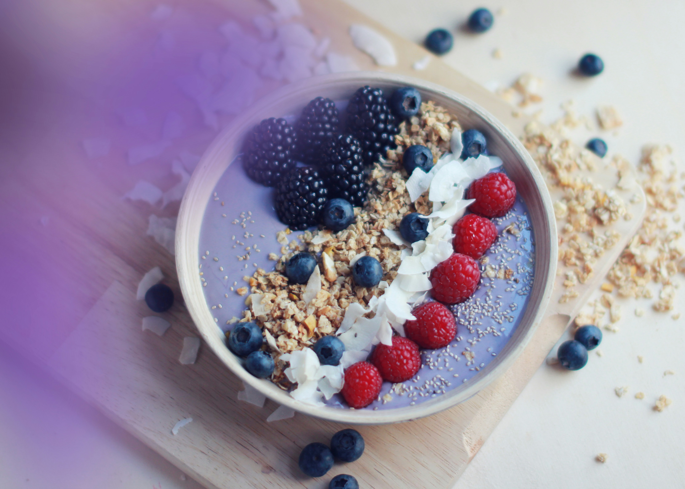
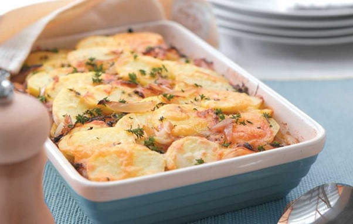
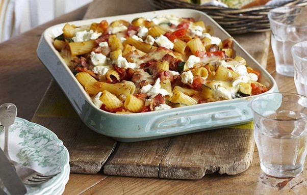

Recepies
Find healthy deliciousness in every meal with our collection of delicious and nutritious recipes! From breakfast to dinner, we've come up with creative ideas to satisfy your taste buds without compromising on health. Let's explore and find inspiration for healthy meals that are refreshing and easy to prepare.
Soothing banana berry smoothie bowl
Ingredients
- 1/2 cup frozen mixed berries
- 1 small banana
- 1/2 cup of Milk
- 1/2 tablespoon peanut butter
- 1 tablespoon rolled oats
- In a food processor, place all smoothie ingredients and blitz until smooth.
- Pour smoothie in 2 bowls and top with garnishes of your choice.
Instructions
Healthier potato gratin
Ingredients
- spray oil
- 2 onions, finely sliced
- 2 cloves garlic, thinly sliced
- 1.2kg potatoes, peeled and thinly sliced into 3mm rounds
- 2 teaspoons cornflour
- 200ml skimmed milk
- 1/2 cup (50g) mature cheddar, grated
- 1 tablespoon fresh thyme leaves
- Heat the oven to 200°C/fan 180°C/gas 6. Spray a non-stick frying pan with oil and put over a medium heat. Gently cook the onions and garlic for 10 min or until soft and lightly browned.
- Spray a large baking dish with oil, then cover the base with a quarter of the potato slices, overlapping slightly. Top with a third of the onion mixture. Repeat the potato and onion layers, finishing with the potatoes.
- Mix the cornflour with a little of the milk in a jug to form a paste, then stir in the rest of the milk. Pour over the gratin, then cover the dish tightly with foil.
- Bake for 30 min, remove from the oven and sprinkle over the cheese and thyme, then return to the oven, loosely covered, for another 20 min. Remove the foil and cook for a further 10 min or until the cheese is melted and the top is crisp.
Instructions
Ham pasta bake
Ingredients
- 250g penne or rigatoni
- 2 tablespoons reduced-fat spread
- 2½ tablespoons plain flour
- 2 cups skimmed milk
- 1 tablespoon Dijon mustard
- 1/2 cup slow-roasted tomatoes
- 150g cooked lean ham
- 1 cup goat's cheese or reduced-fat feta, crumbled
- Preheat the oven to 200°C/fan 180°C/gas 6. Cook the pasta according to the pack instructions. Drain, then return to the pan.
- Meanwhile, melt the spread in a saucepan over a medium heat, then stir in the flour and cook for 1 min. Take off the heat; slowly add the milk, stirring until combined. Put the mixture back on the heat; stir until it thickens. Reduce the heat and simmer for 2 min. Take off the heat; stir in the mustard.
- Pour the sauce over the pasta, then stir in the tomatoes and ham. Transfer to a 2 litre baking dish, top with cheese, then bake for 20 min until golden and hot.